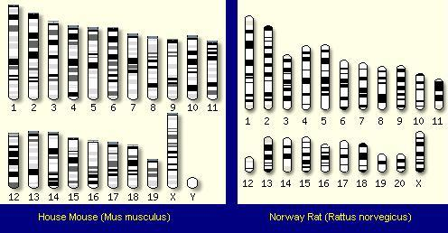

| Evolution in the News - May 2004 |
| by S. Chandler |
The DNA sequences of rats and mice have been decoded. What do they tell us about evolution?
Ask most people, and they would say a rat is just a mouse on steroids. That's certainly what they look like! So, evolutionists naturally assumed they shared a close common ancestor, and so their DNA should be very similar. The mouse and rat DNA should be even more similar than human and chimpanzee DNA.
Mice and rats are both classified under a subfamily called murinae. There are over 100 separate genus of mice and rats and over 1200 different species. Similarly, humans and chimpanzees are classified under a family named hominidae. Humans, are categorized under the genus homo, while chimpanzees and pygmy chimpanzees are categorized under the genus pan. Like the human genome, the genome for the house mouse (Mus musculus) and the common Norway rat (Rattus norvegicus) have been deciphered, and are available to anyone with an Internet connection. 1
In April 2004, the British scientific journal Nature, exclaimed the following regarding the Norway rat's genome project:
|
There was much debate about the overall value of the rat genome sequence and its contribution to the utility of the rat as a model organism. The debate was fuelled by the naive belief that the rat and mouse were so similar morphologically and evolutionary that the rat sequence would be redundant. 2 [emphasis supplied] |
Scientists argued whether it would be worth the 120 million dollars required for the rat genome because they thought it would be almost identical to the already completed mouse genome!
Nature printed an in-depth analysis of the recently decoded rat genome. According to that April 2004 article, Rats and mice split from a "Hypothetical murid ancestor 12-24 million years ago".
Rat and mouse reproduction rates are among the highest of all mammals. Females reach puberty in a couple of months, and have a gestation period of only about 20 days. Rats and mice can have as many as 18 offspring at a time, and have a life span of over 2 years. They continue to reproduce for most of their lives. When the conditions are right, their populations can reach plague proportions. That means they produce many generations in a very short period of time. Seemingly, they should be excellent candidates for frequent mutation errors, which supposedly results in macro-evolution (the alleged process of turning one kind of creature into another).
There are some other good reasons mice and rats should be great candidates for macro-evolution.
For two species that are supposedly so closely related, rats and mice are surprisingly different. Rat and mouse droppings (and urine) are so different that pest control professionals can tell by scent alone whether you have a rat or mouse infestation problem. Rats and mice cannot produce viable offspring. Their eggs have a protective covering (called thezona pellucida) which prevents the entry of sperm of another species. Even using advanced techniques (removing the zona), cell division does not occur.
Rats and mice have a different number of chromosomes. The house mouse (Mus musculus) has 20 pairs of chromosomes and the Norway rat (Rattus norvegicus) has 21. Superficially, their chromosomes also look very different from each other, as you can see in this figure from http://www.ensembl.org.
|
 |
|---|
|
Researchers estimate about 50 chromosomal rearrangements occurred in each of the rodent lines after divergence from their common ancestor. |
The caption assumes the chromosomes were arranged differently in a hypothetical common ancestor, whose existence is based strictly on the assumption of evolution. They don't really know how the chromosomes were arranged in the common ancestor. They don't even know there was a common ancestor. What they are really saying is that if there was a common ancestor with 20 or 21 pairs of chromosomes, there had to be about 50 chromosomal rearrangements to get the configuration found in rats and mice today.
Nature's April article, comparing mice, rats and humans, states that 67% of the rat's euchromatic genome aligns with the mouse. The euchromatic regions contain the genetically active chromatin (which contains the DNA) used from transcription. Twenty-nine percent of the euchromaticrat genome is rat specific, and does not align with the mouse. When describing changes to various genetic sites and gene areas between the two species, Nature peppered the article with words like "surprising","rapid", and "considerable". The National Human Genome Research Institute (NHGRI) writes it this way.
|
...while rats and mice look very similar to the human eye, there are significant genomic differences between the two types of rodents. For example, some aspects of genomic evolution in the rat appear to be accelerated when compared to the mouse. According to the new analysis, due to the unusually rapid expansion of selected gene families, rats possess some genes not found in the mouse, including genes involved in immunity, the production of pheromones (chemicals involved in sexual attraction), the breakdown of proteins and the detection and detoxification of chemicals. 3 |
It is a scientific fact that "there are significant genomic differences." It is speculation that these differences are the result of "accelerated" evolution. Another conclusion could be that a rat and mouse's DNA is very different because they don't share a close common ancestor.
Perhaps, evolutionists will eventually claim that the similarity in physical appearance is the result of "convergent evolution" (just as Herbert claimed was the case for placental and marsupial flying squirrels). That is, they may claim two very different kinds of animals evolved into rats and mice, which merely look very similar because the environment somehow made them evolve that way. No matter what the evidence is, it can always be twisted to "prove" evolution. Just remember scientists originally argued whether or not to even spend the money to decode both DNA sequences because they expected them to be almost identical. It turned out that "there are significant genomic differences."
So, after a long time, during which there were significant chromosome and DNA structural changes, mice and rats still look and behave nearly alike. Perhaps this is just another one of the many incredible coincidences we are used to hearing about.
There are so many differences in the DNA of mice and rats, evolutionists say the changes would have had to have happened very rapidly.
|
The number of chromosomal rearrangements, as well as other types of genome changes, was found to be much lower in the primate lineage, indicating that evolutionary change has occurred at a faster rate in rodents than in primates. 4 |
If mice and rats shared a common ancestor 12 to 24 million years ago, and man and ape made a similar split from a common primate ancestor only 5-10 million years ago, and evolutionary change was apparently faster in rodents than it was in primates, why are there more differences between a man and ape than there are between a rat and a mouse?
Also, it would seem, because of the reasons stated above, the mouse or rat, since their split from the "Hypothetical murid ancestor" would have developed some new outward feature or function. There is not one example of such a creature in the last alleged 24 million years in the fossil record.
Once again, DNA analysis has failed to be the silver bullet that proves evolution. Once again, DNA has shot the evolutionists in the foot. All they can say is, "Rats!"
| Quick links to | |||
|---|---|---|---|
| Science Against Evolution Home Page |
Back issues of Disclosure (our newsletter) |
Web Site of the Month |
Topical Index |
Footnotes:
1
DNA sequences can be seen at http://www.ensembl.org
(Ev)
2
Nature, Vol. 428, 01 April 2004, "Genome sequence of the Brown Norway rat yields insights into mammalian evolution" pages 493-521
(Ev)
3
http://www.nhgri.nih.gov/11511308
(Ev)
4
ibid.